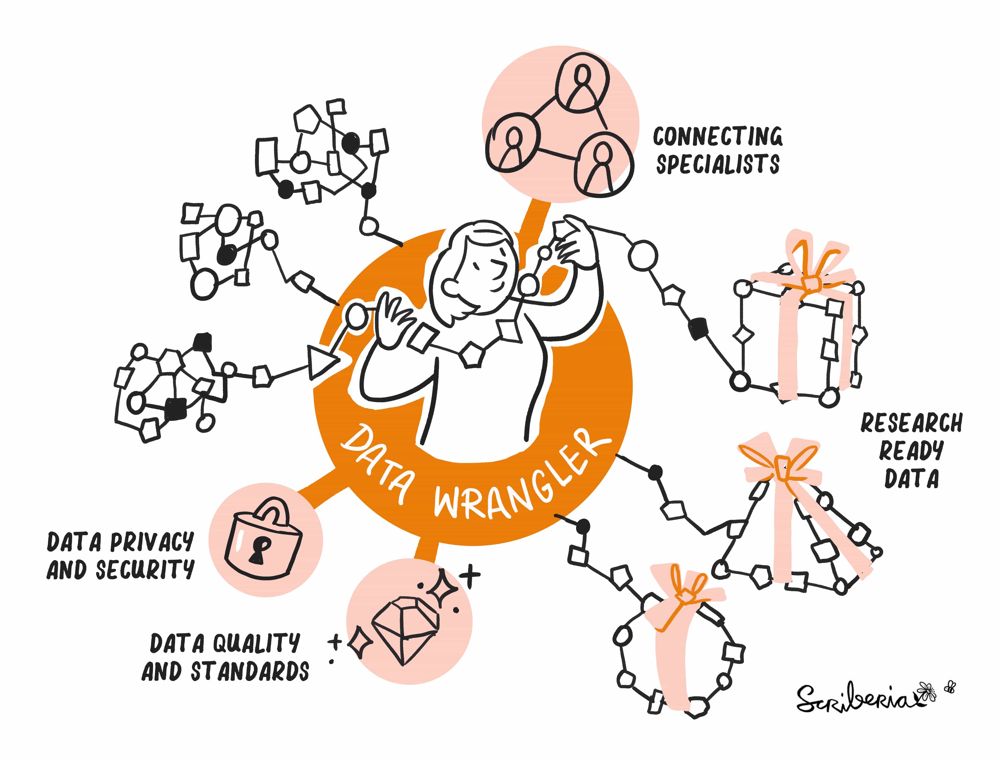
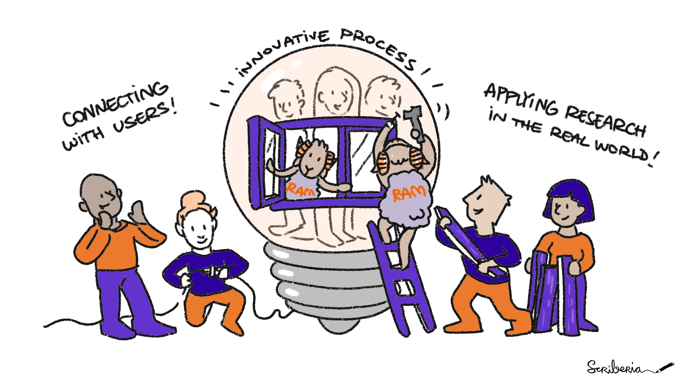
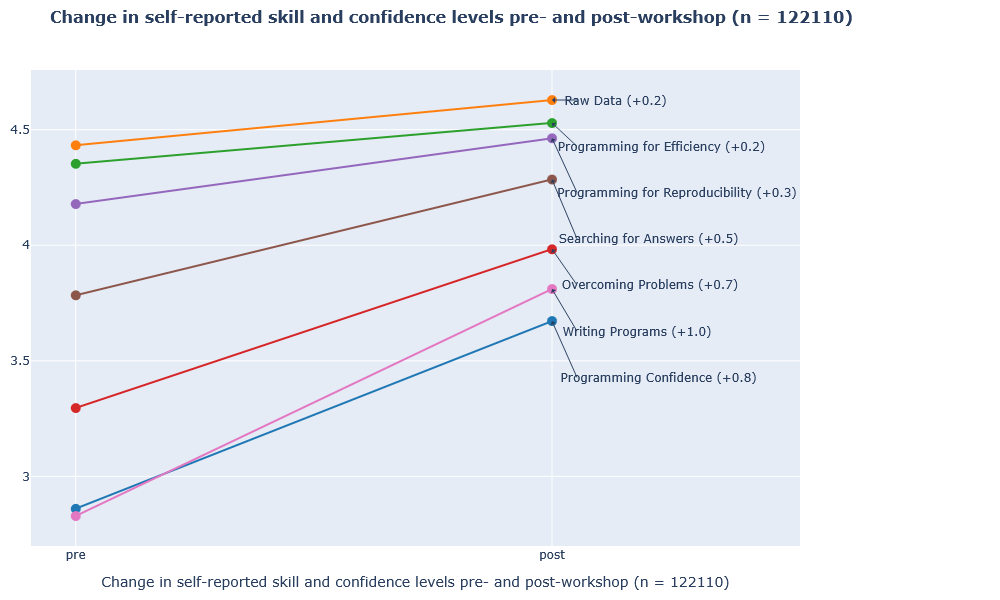
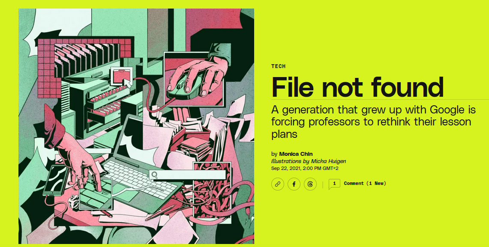

Research Engineering Support
Max Paulus
Agenda
- Research support/infrastructure roles
- Research software and infrastructure
- Training: the Carpentries
- Lessons / Challenges / Discussion
Research Infrastructure Roles

Research software engineer
The role of RSEs varies across Dutch institutions and projects. Some are deeply embedded in research teams, developing new software and advising researchers … Others focus on support and training, guiding researchers on software best practices, including version control, testing, documentation, and FAIR principles.
This variety in roles reflects the diverse ways institutions have implemented RSE positions, tailored to their local research needs.
Other roles
Data wrangler, Research application manager, Data steward
Data wrangler

RAM

Research engineer @ FMG
RSE, data wrangler & research application manager?
We build tools that fit in the workflow of researchers. Our biggest challenge is finding out what researchers actually need and how they can use our tools in their work.
That’s the role of research engineers
Research Engineering Service @ FMG
- Consultancy: < 1 hour
- Short-term projects: days/weeks
- Long-term projects: infrastructure development
We act as a knowledge hub where expertise gained in temporary projects are safeguarded and used for cross-pollination across domains.
Our knowledge hub: recent examples
- internal database, research cloud, android app
- proof of concepts
What is research software?
From the LCRDM report:
it [research software] contains the research process: data is collected, read, preprocessed, analyzed, visualized and simulated using research software
Software is a form of data
- can be stored, loaded, processed
- used as input or output (of other software)
- but: it is a complex type of data
- context
- dependencies
- maintenance
Software as components of instruments
- instruments: MRI-scanner, data donation (virtual)
- software components: UI, server, database, …
Or more generally, research software components organize, serve, and provide access to data
Infrastructure software vs. software infrastructure
- compilers and programming languages
- generic software libraries
- code repositories, data repositories
- and open source software in general
Free, publicly available source code is the infrastructure on which all of digital society relies. It is vital to the functioning of governments, private companies, and individual lives.

The “?” can be
- a laptop
- a cloud service
- a container (software infrastructure software?)
- a container on the cloud
Example: app vs. script
The Carpentries
What is the Carpentries?
Foundational coding and data science skills for research
- open, community-built lessons
- learn-by-doing
- live-coding
- train the trainer
- network, community
What can you learn in 4 days?

Other feedback:
- comfortable learning environment
- less so: immediate applicability
Digital literacy

As the student begins assembling their resources for the assignment, they may not be able to conveniently locate the relevant information if it is spread across web-based organizational tools, a variety of personal computer locations and devices, and bookmarked web pages
Where is my software running?
Understanding (infrastructure) software as components
- self-suffciency
- awareness re maintenance
- privacy and security
Lessons learned
- Importance of software management (training)
- Impact of live coding (learn-by-doing approach)